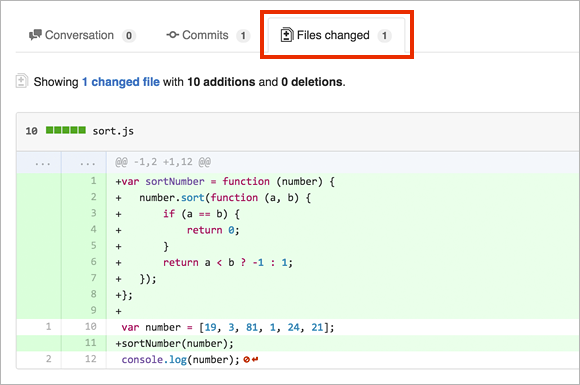
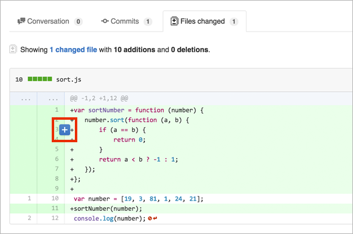
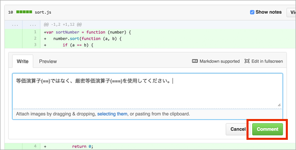
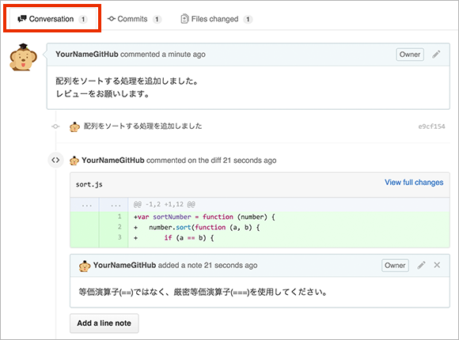
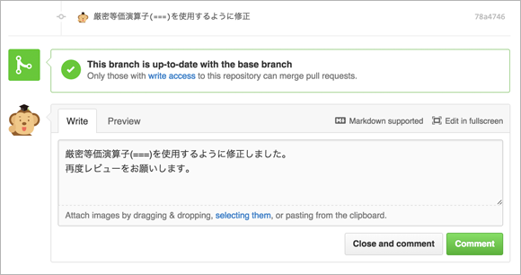
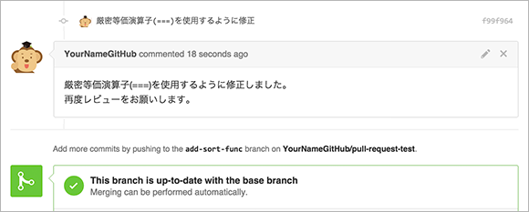

教學 來使用Pull Request吧
審核與合併
GitHub篇
從畫面上檢查差異和審核
審核負責人可以從「Files changed」分頁確認變更內容。

如果有需要修正的地方，可以在原始碼上留下評論。將滑鼠移到目標行時，點擊顯示的加號按鈕。

輸入需要修正的內容，然後點擊「Comment」按鈕。

輸入的評論會以行內方式嵌入原始碼中，同時也會記錄在「Conversation」分頁中。

反映審核內容
根據審核內容修正原始碼。
sort.jsvar sortNumber = function (number) {
number.sort(function (a, b) {
if (a === b) {
return 0;
}
return a < b ? -1 : 1;
});
};
var number = [19, 3, 81, 1, 24, 21];
sortNumber(number);
console.log(number);
修正完成後，再次進行提交和Push。
$ git add sort.js
$ git commit -m "修正為使用嚴格等於運算子(===)"
$ git push origin add-sort-func
為了告知已修正完成，請在剛才建立的Pull Request上留下評論。

可以從「Conversation」或「Commits」分頁確認修正後的提交。另外在「Files Changed」分頁中，會以包含修正提交在內的所有提交來顯示差異。
